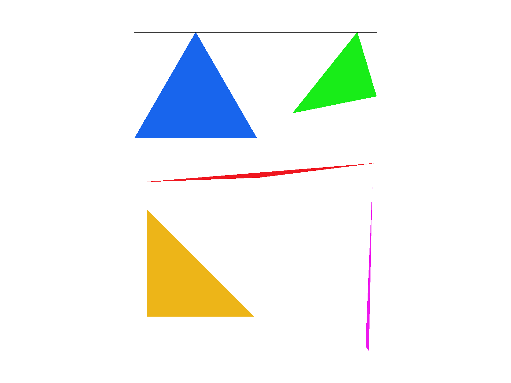

Overview
This project explores the fundamentals of computer graphics by building a functional vector graphics renderer that implements supersampling, pixel sampling, and mipmap level sampling. The project provides an interactive GUI which allows users to witness the impact of each feature and how they behave in conjunction. Tasks 1-3 focus on implementing key components of the rasterization pipeline (drawing triangles, antialiasing, and transforms) and Tasks 4-6 focus on implementing texture mapping (via barycentric coordinates) and two sampling techniques (pixel and mipmap level sampling) to help mitigate the presence of rendering artifacts. Throughout this project, I learned more about how images are stores as data and how that data can be manipulated under the hood. Additionally, I found the interactive GUI great for building my intuition on sampling, texture mapping, and the rasterization pipeline in general. Overall, I really enjoyed working on this project because it provided me with an opportunity to apply the theoretical knowledge from lecture to a concrete, tangible piece of software which puts the theory into practice!
Section I: Rasterization
Task 1: Drawing Single-Color Triangles
Given three points which define a triangles vertices, I rasterized triangles by performing three line tests to check whether a sample point is contained within the triangle described by the three provided vertices.
A naive approach would be to sample each pixel in the image and perform the three line tests for each to determine whether the pixel should be filled with a color or not. This naive approach would result in unnecessary pixel traversals and point-in-triangle tests (consider a triangle in a small subregion of the pixel space and the image dimensions are very large).
In order to reduce the uncessary traversals and computation, I computed the bounding box of the triangle by finding the maximum and minimum x and y values in order to determine two diagonal points which would encompass a minimal region that contains the triangle:
xmin = min(min(x0, x1), x2)
ymin = min(min(y0, y1), y2)
xmax = max(max(x0, x1), x2)
ymax = max(max(y0, y1), y2)
The pixel traversal would start at xmin and ymin and iterate up to xmax and ymax which gaurantees that the algorithm used to rasterize triangles will be no worse than sampling points within the bounding box of the triangle.
With the bounding box established, I use a double for-loop to traverse the bounding box pixel space and obtain sample points which are sampled to check whether they lie within the provided triangle.
In order to reduce code duplication for the logic of checking whether a point is within a triangle, I created two helper methods line_test_pt and inside_triangle.
The line_test_pt method computes L(x, y) = -(x - x0)(y1 - y0) + (y - y0)(x1 - x0) for a sample point (x, y) where (x0, y0) and (x1, y1) correspond to two vertices that form one side of the provided triangle.
Leveraging this computation, I implemented inside_triangle to run 3 line tests to determine whether the point is within the triangle (check that the sample point is within or on one of the three sides of the triangle).
Each sample point was obtained by sampling the center of a pixel (i.e. if the coordinate of a pixel is (x,y), the sample point would be (x + 0.5, y + 0.5)).
Each sample point would be passed to the inside_triangle method which leverages the line_test_pt method to return whether the sample point is contained in the triangle.
If the sample point lies within the triangle, I invoke fill_pixel with the respective pixel's coordinates to apply the provided color, otherwise if the sample point did not lie within the triangle the pixel would remain uncolored.
An interesting observation after implementing this simple rasterization approach to draw triangles was the presence of rendering artifacts, like jaggies and visual gaps in the image render.
Intuitively jaggies were inevitable given the coarse decision to either completely fill or not fill a pixel with a color.
This causes very jagged edges for the rendered images.

Jaggies present at edges. |
Rendering artifacts present. |
Task 2: Antialiasing by supersampling
In this task, I implemented antialiasing via supersampling in order to reduce and mitigate the rendering artifacts of jaggies and pixel gaps as seen in the previous task.
Supersampling will divide a given pixel into smaller n × n subregions (where n is the sqrt(sample_rate)) to obtain more sample points for a given pixel, whose values will be averaged down to obtain a new value for the pixel.
In other words, supersampling will rasterize an image as a high resolution image (this follows intuitively given the increase in sample points) and then downsample the higher resolution image to the respective output resolution controlled by the framebuffer.
Supersampling is useful because by rendering the image at a higher resolution and then downsampling the image will reduce artifacts such as jaggies and very sharp edges, which ultimately results in smooth edges.
In order to implement supersampling, I increased the size of the sample buffer by the sample rate in set_sample_rate, set_framebuffer_target, and RasterizerImp.
Additionally, I added another double for-loop to iterate over the smaller n × n subregion for a pixel and obtain sample points.
It is worth noting that these sample points still conform to the convention used in Task 1, which was to sample the center of the pixel.
In the case of obtaining sample points for the subregions, the sample point is at the center of each subregion.
Finally, the resolve_to_framebuffer method was updated to handle averaging down the n × n grid of sample values that are related to each output pixel.
Given this approach to supporting supersampling and since lines and points are not supersampled, the rasterize_point method had to be updated to fill all the supersamples corresponding to a given point.
By fixing this, the rasterize_line method's functionality was also restored since it relies on rasterize_point.
After implementing supersampling, triangles were successfully antialiased because now there was a more granular approach to determining the coloring for a pixel based on the increased number of sample points.
Before supersampling the edges of triangles were very sharp and drastic in terms coloring and presence of jaggies and missing pixels, however, now each pixel's color value is the average of the value across each subregion within the pixel.
This distinction improves how edges are able to be rendered by accounting for the fact parts of a pixel may lie outside of a triangle, and by supersampling (treating the image as high resolution) these nuances were accounted for during the downsampling in order to generate smooth defined edges.
The effects of supersampling is evident when comparing the different sample rates on svg/basic/test4.svg:
|

Sample rate: 1 |

Sample rate: 16 |
In order to better understand the role that supersampling plays in the rendering of svg/basic/test4.svg, the following images focus on the red triangle's right vertex's rendering artifacts (jaggies and visible gaps) and showcase how supersampling is able to eliminate them.

Sample rate: 1 |
Sample rate: 4 |
Sample rate: 16 |
The left image showcases the right vertex of the red triangle with a sample rate of 1, which does not apply supersampling.
In this image the corner of this triangle is very skinny which in turn means that an entire pixel does not completely fit within this part of the triangle, however, in the absence of supersampling the entire pixel would be filled in if the sample point was in the triangle or not filled in if the sample point lie outside the triangle.
This explains why there are harsh, jagged edges and even some pixels which are not filled in.
The middle image increases the sample rate to 4 which means that each pixel is divided into a 2 × 2 subregion, meaning that now instead of 1 sample point for the pixel, there will be 4 sample points which will be evaluated and used to determine the final value assigned to the pixel.
The jaggies and missing colored pixels have been reduced because the image was treated as higher resolution, which can be interpreted as taking a finer grain approach to understanding what parts and how much of the pixel lies within the skinny component of the triangle.
The right image increases the sample rate to 16 which means that each pixel is divided into a 4 × 4 subregion.
As explained for the middle image, an increase in the sample rate will increase the resolution at which the image will be rendered.
Ultimately, it is visually evident that this image does the best at removing the rendering artifacts discussed above.
Task 3: Transforms
This task involved implementing the parameterized matrices for common transforms (translate, scale, rotate) as seen during lecture. After a successful implementation of the three transforms, the robot was rendered and properly created.

I wanted to create a robot that was more interesting and decided to make one as a miner celebrating after finding gold! I added a few new polygons and applied the three implemented transforms in order to change the orientation of the robot's legs and arms (applied rotations), add a miner's hat (applied translations, rotations, and scaling), and place a pickaxe in its hand (applied translation, rotations, and scaling). I also played around with the colors in order to make the image more entertaining.
Section II: Sampling and Texture Mapping
Task 4: Barycentric Coordinates
Barycentric coordinates is a coordinate system that is used to identify and express points within a triangle as a linear combination of the triangle's three vertices: pt_in_triangle = αvertexA + βvertexB + γvertexC (i.e. weighting each of vertex) where γ = 1 - α - β.
To illustrate this definition, I created an svg where each triangle vertex is a distinct color (the left vertex is red, the top vertex is blue, and the right vertex is green) and the remaining points within the triangle are the result of applying barycentric coordinates.
Barycentric coordinates will linearly interpolate each vertex's value in order to identify the value at a given point within the triangle, which will create a color gradient. In other words, three "weights" are calculated as described above: α, β, γ (one for each vertex).
I created a helper method calculate_barycentric_coords to compute these weights by calculating proportional distances. This approach to solving for the weights was convenient since I could leverage the line_test_pt method I implemented earlier.
Intuitively, each weight corresponds to how strong the influence of a respective vertex is.
For example, the pixels closer to the left vertex are more red (heavier influence from left vertex) than pixels near the top and the pixels near the center of the triangle are a combination of all three colors.
In this task, barycentric coordinates are seen in action in the rendering of the following color wheel: